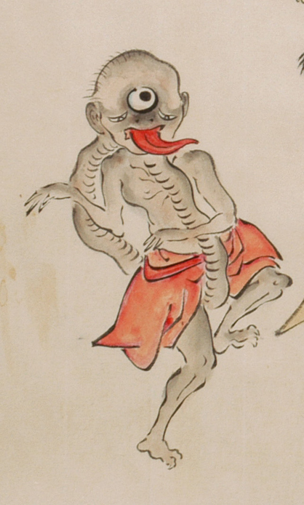

三つ目で首が長い化物。赤い着物を腰に巻いている。肌は浅黒く、髪の毛はまばらで、額に大きな3つめの目玉がついている。先が尖った大きな赤い舌を出している。蛇腹のような皺がある首が体の後かが股の間を通って胴体に続いている。手足は3本指で、鋭い爪が生えている。左足を上げて、踊っている。
出典：親書誌：U426_nichibunken_0053：化物婚礼絵巻；バケモノコンレイエマキ／日付：2006／資源識別子：U426_nichibunken_0053_0022_0007
Copyright (c)2010- International Research Center for Japanese Studies, Kyoto, Japan. All rights reserved.